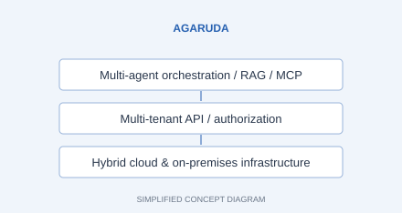

AgarudaJun 2025 – Present
Enterprise AI & data center platform ↗
Founding Engineer · Senior Software Engineer & TPM
Led execution across five teams and 15 people, connecting Backend/Infra, Frontend, AI, 3D/Omniverse, and Design.
My contribution
Technical decision Designed multi-agent orchestration, tenant-aware state, and hybrid deployment architecture.
Outcome Built platform capabilities across 10 core services and 50+ infrastructure components.
LeadershipAligned requirements, dependencies, and communication across five teams and 15 people, working with a core three-engineer Backend/Infra team.
FastAPI · Kubernetes/DevOps · AI Agent · vLLM · On-Prem Deployment